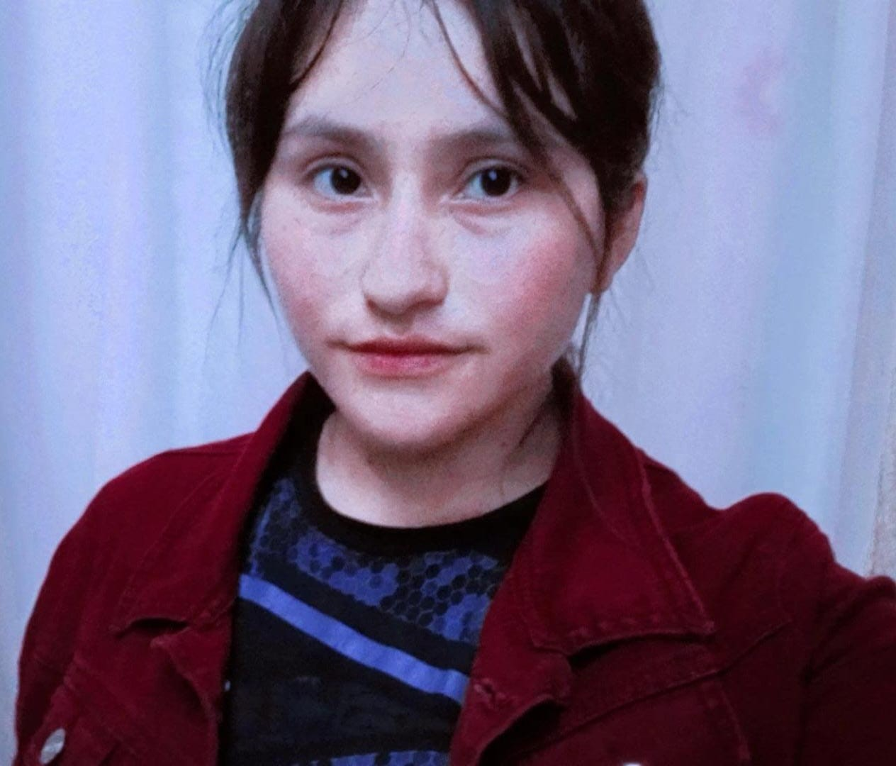

<!DOCTYPE hmtl>
<html>
<head>
<title>Violeta Lopez Guzman</title>
<link rel="stylesheet" href="Site.css">
<link href="https://cdn.jsdelivr.net/npm/css.gg/icons/all.css" rel="stylesheet"/>
</head>
<body>
 <div class="main-content">
  <aside>
    <div class="profile">
     
    <div>
      <h1 class="title">Violeta Lopez Guzman</h1>
      <div class="badge-profile">Estudiante</div>
      <div class="social">
         <a href= "https://www.facebook.com/share/1E2eQuhZyD/" target="_blank"><i class="gg-facebook"></i></a>
         <a href= "https://www.instagram.com/vi_oleta4668?igsh=NXYyN2xpN3JtZzhl" target="_blank"><i class="gg-instagram"></i></a>
         <a href="Gmail.com.com" target="_blank"><i class="gg.mail"></i></a>
      </div>
     </div>
     <div class="info">
       <ul class="contacts-block">
         <li class="contacts-block-item">Octubre 24, 2007</li>
         <li class="contacts-block-item">Puebla, Mexico</li>
         <li class="contacts-block-item"><a href=" violetalopezguzman1@gmail.com"> violetalopezguzman1@gmail.com</a></li>
         <li class="contacts-block-item">+52 (797) 146-9802</li>
         <li class="contacts-block-item"> <a href="skipe:skipe-example"> vi_oleta4668 </a></li>
       </ul>
       <a class="btn" href="#">downloand CV</a>
    </div>
   </div>
  </aside>
 </body>
</html>

 <section class="resumen">
    Mi informacion Personal

   <header>
    <div class="menu-circle" onclick="toggleMenu()">
      <i class="gg-menu-oreos"></i>
    </div>
    <div class="inner-menu js-menu">
      <ul class="nav">
        <li class="nav-item"><a class="active" href="about.html">About</a></li>
        <li class="nav-item"><a href="portofolio.html">Portofolio</a></li>
      </ul>
    </div>
  </header>

  <div>
    <h2 class="title bordered">Acerca de Mi</h2>
    <p>
      Soy una estudiante de último grado del bachillerato COBAEP  Plantel 29, tengo 17 años aun. Me gusta el campo y estoy interesad por explorar áreas relacionadas con las plantas los animales y el medio ambiente, al igual que me gusta la lectura.
    </p>
  </div>
  
  <div class="services-content">
    <h2>Mis Habilidades</h2>
    <div class="my-services">
      <div>
        <div>
          <span class="gg-phone"></span>
          <h3>Habilidad 1</h3>
          <p>Detección de enfermedades: Logro  distinguir cierta cantidad de plagas y enfermedades en plantas de  producción  </p>
        </div>
      </div>
    
    <div>
    
      <div>
        <span class="gg-laptop"></span>
        <h3>Habilidad 2</h3>
        <p>Aprendizaje mejor con práctica</p>
      </div>
    </div>
    <div>
      
      <div>
        <span class="gg-clipboard"></span>
        <h3>Habilidad 3</h3>
        <p>Creación de Fotomontaje: Crear fotomontaje y creación de dibujos hechos en corel Draw</p>
      </div>
    </div>
    <div>
      
      <div>
        <span class="gg-music-note"></span>
        <h3>Habilidad 4</h3>
        <p>Suelo tener liderazgo dependiendo de el equipo y trato de formar un ambiente dedicado </p>
      </div>
    </div>
  </div>
 </div>

 <div class="timeline-content">
   <h2>Resumen</h2>  
  <div>
    <div>
      <h2><i class="gg-mail"></i>Educacion</h2>
      <div class="timeline">
        <!--Item-->
        <article class="timeline_item">
          <h5 class="title title--h5 timeline_title ">Preparatoria</h5>
          <span class="timeline_period">2022 - 2025</span>
          <p class="timeline_description">
           Me encuentro estudiando mi bachiller en el Municipio de Tetela de Ocampo, comunidad de San Nicolas en su Tercera seccion
                   </p>
        </article>

        <!--Item-->
        <article class="timeline_item">
          <h5 class="title title--h5 timeline_title ">Curso 1</h5>
          <span class="timeline_period">2023 - 2024</span>
          <p class="timeline_description">
            inicia un curso de tegnologias de la informacion, en el cual nos presentaron dos partes o aplicaciones que se ocuparian (Word y Excel) para empezar el aprendizaje, que se puede hacer, como hacer y como utilizar todas las funciones de estas aplicacioines llegando a unu rango de uso intermedio
          </p>
        </article>

        <!--Item-->
        <article class="timeline_item">
          <h5 class="title title--h5 timeline_title ">Curso 2</h5>
          <span class="timeline_period">2024 - 2025</span>
          <p class="timeline_description">
            Curso de tegnologias en el cual nos presentaron nuevas aplicaciones donde pudimos aprender a hacer diseños, logos entre otras cosas y tambien aplicaciones donde podemos hacer paginas webs, programar, llegando a unu rango de uso en todas las aplicaciones
          </p>
        </article>
      </div>
    </div>
   <div>
     <h2><i class="gg-briefcase"></i>Experiencia</h2>
     <div class="timeline">
      <!--Item-->
      <article class="timeline_item">
        <h5 class="title title--h5 timeline_title ">Proyecto 1</h5>
        <span class="timeline_period">2023 - 2024</span>
        <p class="timeline_description">
           Proyecto 1: Creación de composta: Desarrollé un proyecto sobre la creación de composta para aprender sobre la importancia de la sostenibilidad y el reciclaje de residuos orgánicos. Este proyecto me permitió desarrollar mis habilidades en investigación y análisis.
                  </p>
      </article>

      <!--Item-->
      <article class="timeline_item">
        <h5 class="title title--h5 timeline_title ">Proyecto 2</h5>
        <span class="timeline_period">2024 - 2025</span>
        <p class="timeline_description">
           Proyecto 2: Creación de un elevador con Arduino: Creé un elevador utilizando Arduino para aprender sobre la programación y la electrónica. Este proyecto me permitió desarrollar mis habilidades en programación y diseño de sistemas electrónicos. 
        </p>
      </article>

      <!--Item-->
      <article class="timeline_item">
        <h5 class="title title--h5 timeline_title ">Proyecto 3</h5>
        <span class="timeline_period">2024 - 2025</span>
        <p class="timeline_description">
           Proyecto 3: Creación de ediciones en Photoshop: Realicé ediciones en Photoshop para aprender a diseñar y editar imágenes de manera creativa y profesional. Este proyecto me permitió desarrollar mis habilidades en diseño gráfico y edición de imágenes.   </p>
      </article>
      </div>
    </div>
 </div>
</section>